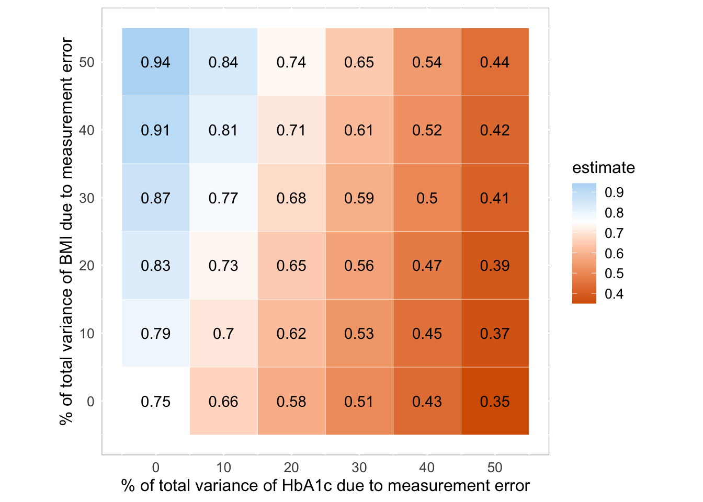

library(Hmisc)
library(mice)
library(tidyverse)An example of a statistical simulation
The simulation study presented in the section “An example of a statistical simulation” in Boulesteix, Groenwold, Abrahamowicz, et al. (2020) is now performed.
In order to perform the simulation the following packages are needed, which can be loaded through the following code:
Data preparation
Data can then be loaded through the following code which produces an dataframe d which contains information on different variables of interest and an identifier for the respondent seqn:
d1 <- sasxport.get("data/DEMO_I.xpt")
d2 <- sasxport.get("data/BPX_I.xpt")
d3 <- sasxport.get("data/BMX_I.xpt")
d4 <- sasxport.get("data/GHB_I.xpt")
d5 <- sasxport.get("data/TCHOL_I.xpt")
d1.t <- subset(d1,select=c("seqn","riagendr","ridageyr"))
d2.t <- subset(d2,select=c("seqn","bpxsy1"))
d3.t <- subset(d3,select=c("seqn","bmxbmi"))
d4.t <- subset(d4,select=c("seqn","lbxgh"))
d5.t <- subset(d5,select=c("seqn","lbdtcsi"))
d1.t <- subset(d1,select=c("seqn","riagendr","ridageyr"))
d2.t <- subset(d2,select=c("seqn","bpxsy1"))
d3.t <- subset(d3,select=c("seqn","bmxbmi"))
d4.t <- subset(d4,select=c("seqn","lbxgh"))
d5.t <- subset(d5,select=c("seqn","lbdtcsi"))
d <- merge(d1.t,d2.t)
d <- merge(d,d3.t)
d <- merge(d,d4.t)
d <- merge(d,d5.t)The dataset present now the following variables:
seqn, the id of the respondent;
riagendr, the gender of the respondent;
ridageyr, the age in years of the respondent at the time of the screeening;
bpxsy1, the systolic blood pressure of the respondent (1st rdg) expressed in mm Hg;
bmxbmi, the Body Mass Index of the respondent expressed in kg/m**2;
lbxgh, the Glycohemoglobin level in the respondent expressed as a percentage;
lbdtcsi, the total level of Cholesterol in the respondent expressed as mmol/L;
New variables are added to the dataset representing the same variables but a more easily comprehensive names. This is done through the following code:
d$age <- d$ridageyr
d$sex <- d$riagendr
d$bp <- d$bpxsy1
d$bmi <- d$bmxbmi
d$HbA1C <- d$lbxgh
d$chol <- d$lbdtcsiMinor respondent are then excluded from the dataset by assigning NA to each age value under 18 and then by considering only complete cases. The new dataframe is called dc. This is done by means of the following code:
d$age[d$age<18] <- NA
dc <- cc(subset(d,select=c("age","sex","bmi","HbA1C","bp")))Analysis
Evaluation of the impact of Glycohemoglobin level on the systolic blood pressure assuming no measurement errors
A first linear regression is performed, which regress the systolic blood pressure bp on the Glycohemoglobin level HbA1C with age and gender as covariates. The summary of the model is :
summary(lm(bp ~ HbA1C + age + as.factor(sex), data=dc))
Call:
lm(formula = bp ~ HbA1C + age + as.factor(sex), data = dc)
Residuals:
Systolic: Blood pres (1st rdg) mm Hg
Min 1Q Median 3Q Max
-49.887 -10.509 -1.378 8.491 107.583
Coefficients:
Estimate Std. Error t value Pr(>|t|)
(Intercept) 98.75149 1.21418 81.332 < 2e-16 ***
HbA1C 1.12638 0.20291 5.551 2.98e-08 ***
age 0.44486 0.01284 34.648 < 2e-16 ***
as.factor(sex)2 -3.24792 0.45164 -7.191 7.34e-13 ***
---
Signif. codes: 0 '***' 0.001 '**' 0.01 '*' 0.05 '.' 0.1 ' ' 1
Residual standard error: 16.1 on 5088 degrees of freedom
Multiple R-squared: 0.2305, Adjusted R-squared: 0.23
F-statistic: 508 on 3 and 5088 DF, p-value: < 2.2e-16The effect of the glycated haemoglobin on the systolic blood pressure, controlling for age and sex is given by:
round(lm(bp ~ HbA1C + age + as.factor(sex), data=dc)$coef[2],2)HbA1C
1.13 The 95% confidence interval of the regression parameters can then be obtained through:
confint(lm(bp ~ HbA1C + age + as.factor(sex), data=dc)) 2.5 % 97.5 %
(Intercept) 96.3711755 101.1317982
HbA1C 0.7285836 1.5241825
age 0.4196932 0.4700355
as.factor(sex)2 -4.1333281 -2.3625106This shows that the 95% confidence interval for the regression parameter of interest is (0,73;1,52), considering rounded values.
A new regression is performed which adds the Body Mass Index of the respondent bmi as a possible confounder.:
summary(lm(bp ~ HbA1C + bmi + age + as.factor(sex), data=dc))
Call:
lm(formula = bp ~ HbA1C + bmi + age + as.factor(sex), data = dc)
Residuals:
Systolic: Blood pres (1st rdg) mm Hg
Min 1Q Median 3Q Max
-51.068 -10.251 -1.504 8.264 107.410
Coefficients:
Estimate Std. Error t value Pr(>|t|)
(Intercept) 92.65583 1.39320 66.506 < 2e-16 ***
HbA1C 0.75177 0.20596 3.650 0.000265 ***
bmi 0.28632 0.03282 8.724 < 2e-16 ***
age 0.44586 0.01275 34.979 < 2e-16 ***
as.factor(sex)2 -3.63115 0.45049 -8.060 9.4e-16 ***
---
Signif. codes: 0 '***' 0.001 '**' 0.01 '*' 0.05 '.' 0.1 ' ' 1
Residual standard error: 15.98 on 5087 degrees of freedom
Multiple R-squared: 0.2418, Adjusted R-squared: 0.2412
F-statistic: 405.7 on 4 and 5087 DF, p-value: < 2.2e-16The effect of the glycated haemoglobin on the systolic blood pressure , controlling for age, sex and BMI is given by:
round(lm(bp ~ HbA1C + bmi + age + as.factor(sex), data=dc)$coef[2],2)HbA1C
0.75 And the corresponding confidence intervals:
confint(lm(bp ~ HbA1C + bmi + age + as.factor(sex), data=dc)) 2.5 % 97.5 %
(Intercept) 89.9245592 95.3871089
HbA1C 0.3479966 1.1555348
bmi 0.2219815 0.3506673
age 0.4208695 0.4708464
as.factor(sex)2 -4.5143014 -2.7479929The confidence interval for the regression parameter of interest is now (0,35;1,15).
Evaluation of the impact of Glycohemoglobin level on the systolic blood pressure in presence of measurement errors
New artificial variables called HbA1C.me and bmi.me are now created to represent bmi and HbA1C in presence of measurement errors. The final aim is to see what’s the difference in the impact of the Glycohemoglobin level on the systolic blood pressure in presence of measurement errors in the expsoure variable (Glycohemoglobin) and in the confounder one (BMI).
The reference value for the impact of the exposure on the outcome is given by the regression coefficient associated to HbA1C in absence of measurement error, retrieved by the following code:
ref <- lm(bp ~ HbA1C + bmi + age + as.factor(sex), data=dc)$coef[2]HbA1C.me and bmi.me are then created in a simulation process of 1000 datasets (“n.sim”)where the variance of the measurement errors of both Glycohemoglobin level (exposure) and Body Mass Index (confounder) range between 0 and 0.5 of their original variances, considering 5 values equally spaced:
n.sim <- 1e3
perc.me.exp <- seq(0,.5,.1)
perc.me.conf<- seq(0,.5,.1)All the 36 different combination of variances for the newly created variables are then stored in a grid object “scenarios”:
scenarios <- expand.grid(perc.me.exp,perc.me.conf)The reference variances in the original exposure and confounder variables are stored into two objects “var.exp” and “var.conf”:
var.exp <- var(dc$HbA1C)
var.conf <- var(dc$bmi)The original sample size is stored in an object called “n”.
n <- dim(dc)[1]An empty matrix “beta.hat” is created where the regression coefficients of HbA1C.me across all the simulated datasets will be stored. The matrix has dimensions 36( number of different scenarios) times 1000 (number of simulations for each scenario = n.sim)
beta.hat <- matrix(ncol=dim(scenarios)[1], nrow=n.sim)The actual process of simulating HbA1C.me and bmi.me across different datasets is reached thanks to a two nested for-loops. Firstly, for each iteration (1000 in total) a different seed is considered and secondly for each scenario (36 in total), HbA1C.me and bmi.me are created, by adding to the original variables HbA1C and bmi a measurement errors which are randomly sampled from a normal distribution with mean 0 and variances “var.me.exp” and “var.me.conf”. These latter variances are computed as a proportion of the reference variances “var.exp” and “var.conf” defined above. The last step in the loop is the storing of the regression coefficient of HbA1C.me in the corresponding position in the previously created grid “beta.hat”.
for (k in 1:n.sim){
print(k)
set.seed(k)
for (i in 1:dim(scenarios)[1]){
var.me.exp <- var.exp*scenarios[i,1]/(1-scenarios[i,1])
var.me.conf <- var.conf*scenarios[i,2]/(1-scenarios[i,2])
dc$HbA1C.me <- dc$HbA1C + rnorm(dim(dc)[1], 0, sqrt(var.me.exp) )
dc$bmi.me <- dc$bmi + rnorm(dim(dc)[1], 0, sqrt(var.me.conf) )
beta.hat[k,i] <- lm(bp ~ HbA1C.me + age + bmi.me + as.factor(sex), data=dc)$coef[2]
}}Results
Results are presented graphically. In order to create a meaningful graph, first a matrix “tot.mat” is created where the different percentages of the original variances of Glycohemoglobin level (exposure) and Body Mass Index (confounder) are indicated, alongside with the corresponding estimated regression coefficient for HbA1C.me.
tot.mat <- cbind(100*scenarios,apply(beta.hat,2,mean))
colnames(tot.mat) <- c("me.exp","me.conf","estimate")“tot.mat” can now be used as an input in ggplot() function from ggplot2 package, included in tidyverse package, loaded at the beginning of the manuscript. The following command creates a heat map showing how the impact of Glycohemoglobin level on systolic blood pressure changes according to different level of residual variances for the exposure Glycohemoglobin level and the confounder variable Body Mass Index. Some customisation of the graph is done within the theme() layer.
FIGURE <- ggplot(tot.mat, aes(me.exp, me.conf)) +
geom_tile(color="white",aes(fill = estimate)) +
geom_text(aes(label = round(estimate, 2))) +
scale_fill_gradient2(low="#D55E00",mid="white",high = "#56B4E9", midpoint=ref) +
labs(x=paste("% of total variance of HbA1c due to measurement error"),
y=paste("% of total variance of BMI due to measurement error")) +
coord_equal()+
scale_y_continuous(breaks=unique(tot.mat[,1]))+
scale_x_continuous(breaks=unique(tot.mat[,1]))+
theme(panel.background = element_rect(fill='white', colour='grey'),
plot.title=element_text(hjust=0),
axis.ticks=element_blank(),
axis.title=element_text(size=12),
axis.text=element_text(size=10),
legend.title=element_text(size=12),
legend.text=element_text(size=10))
FIGURE
The figure perfectly matches with the one presented in Boulesteix, Groenwold, Abrahamowicz, et al. (2020).
The graph is stored in “results” subfolder using the following code:
ggsave(path = "results", filename = "results.png")